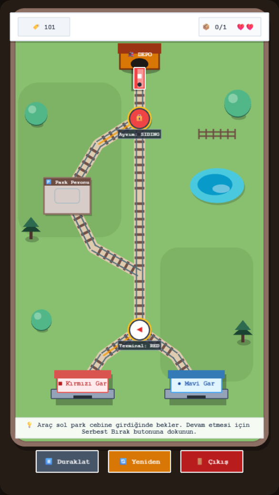
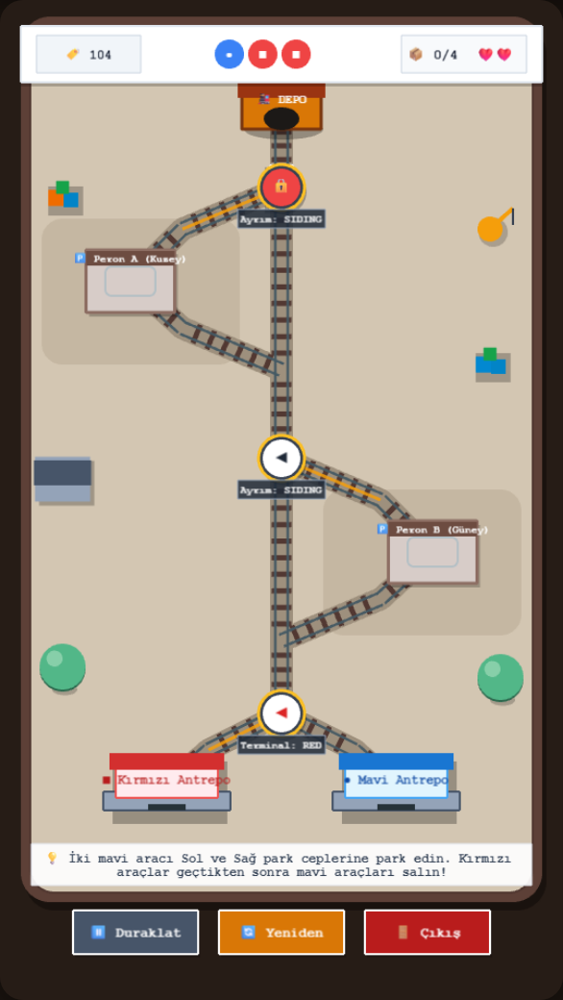
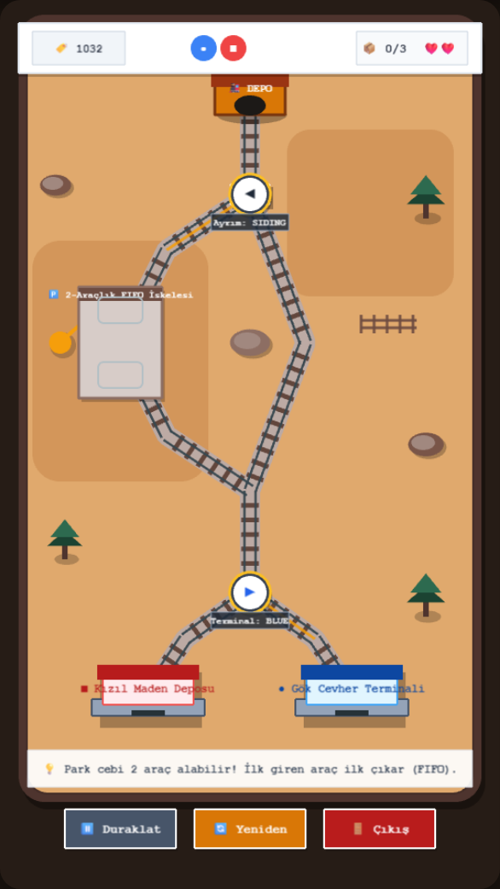

Teknik diyagram görünümü tamamen terk edilerek oyuncak tren estetiğinde, pastel ve sıcak renk paletine sahip, gerçek fiziksel ray ayrımları ve 2.5D binalar içeren kompakt masaüstü demiryolu maketi mimarisi oluşturuldu.



Görsel düzenlemeler tamamen bağımsız bir sunum katmanında (MiniRailDioramaLayouts.ts) hesaplanmış olup, GraphSwitchNetwork'teki düğüm ve kenar bağlantıları birebir korunmuştur. Olmayan hiçbir ray eklenmemiştir.
| Örnek Sahne | Çizge Düğümleri (Mantıksal) | Makas Sayısı & Kollar | Mekânsal Yerleşim Farkı | Fiziksel Ayrım Estetiği |
|---|---|---|---|---|
| A. Seviye 101 | SOURCE, SW_SIDING, SIDING_BAY, MERGE, SW_STATION, RED, BLUE (7 Düğüm) | 2 Makas (MAIN/SIDING, RED/BLUE) | Sola doğru tatlı bir S-kavisle ayrılan pastoral kırsal cep. | Balast çakılı, ahşap traversler, minyatür gölet ve çit çevre objeleri. |
| B. Seviye 104 Dual | SOURCE, SW_A, SIDING_A, MERGE_A, SW_B, SIDING_B, MERGE_B, SW_STATION, RED, BLUE (10 Düğüm) | 3 Makas (SW_A, SW_B, SW_STATION) | Kuzey-Sol ve Güney-Sağ olarak mekânsal olarak zikzak ayrılan çift peron. | Taş parke zemin, liman vinci, kargo kasası istifleri ve antrepo binaları. |
| C. Seviye 103-B FIFO | SOURCE, SW_SIDING, SIDING_BAY (Kapasite 2), MERGE, SW_STATION, RED, BLUE (7 Düğüm) | 2 Makas (MAIN/SIDING, RED/BLUE) | Ana hat kanyon kayasının etrafından kavis çizerken cep solda uzun iskele olarak uzanır. | Terracotta kanyon zemini, kaya blokları, 2 duraklı uzun iskele platformu. |